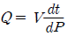
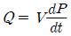
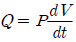
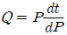
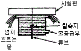
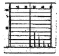
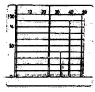
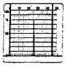
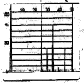
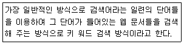

초음파비파괴검사산업기사(구) (2010-07-25 기출문제)
1과목: 초음파탐상시험원리
1. 두께가 2cm인 청동 판재의 공진주파수는 약 얼마인가? (단, 청동 판재의 V = 4.43×105cm/s )
- 0.111MHz
- 0.222MHz
- 0.443MHz
- 0.903MHz
(정답률: 알수없음)

2. 진동자의 두께가 가장 두꺼운 탐촉자는?
- 1MHz 탐촉자
- 2.25MHz 탐촉자
- 5MHz 탐촉자
- 10MHz 탐촉자
(정답률: 알수없음)
3. 초음파탐상시함에서 동일한 크기의 탐촉자로 주파수를 증가시켰을 때 예상되는 결과는?
- 펄스폭이 넓어진다.
- 빔의 분산이 증가한다.
- 측면 분해능이 저하된다.
- 근거리음장 길이가 증가한다.
(정답률: 알수없음)
4. 어떤 계면에서 음압반사율이 0.85 이고, 통과된 두 번째 매질의 반대면에서 초음파가 100% 반사한다고 간주할 때 음압의 왕복 투과율은 약 얼마인가?(단, 다른 인자는 무시한다.)
- 0.15
- 0.28
- 0.72
- 0.85
(정답률: 알수없음)
5. 동일한 크기의 결함인 경우 초음파탐상시험으로 가장 발견하기 쉬운 결함은?
- 시험재 내부에 있는 구형의 결함
- 초음파의 진행방향에 평행인 결함
- 초음파의 진행방향에 수직인 결함
- 이종(異種) 물질들이 혼입된 결함
(정답률: 알수없음)
6. 종파가 물과 강재의 계면으로 수직입사할 때 음압 반사율은 약 몇 % 인가?(단, 강재의 음향임피던스는 45.4g/cm2μs, 물의 음향임피던스는 1.48g/cm2μs 이다.)
- 88%
- 90%
- 92%
- 94%
(정답률: 알수없음)
7. 자분탐상시험에서 결함을 검출하기 위하여 갖추어야 할 특성과 거리가 먼 것은?
- 결함의 위치
- 결함의 방향
- 시험체의 크기
- 시험체의 자기적 특성
(정답률: 알수없음)
8. 비파괴검사(NDT)의 종류가 아닌 것은?
- 육안검사
- 부식검사
- 와전류탐상시험
- 음향방출시험
(정답률: 알수없음)
9. 결함부와 이에 적합한 비파괴검사법의 연결이 틀린 것은?
- 강재의 표면결함 - 자분탐상시험법
- 경금속의 표면결함 - 침투탐상시험법
- 용접내부의 기공 - 와전류탐상시험법
- 단조품의 내부결함 - 초음파탐상시험법
(정답률: 알수없음)
10. 누설검사법 중 대형 용기나 저장조 검사에 이용되지만 누설위치의 측정에는 적합하지 않은 검사법은?
- 기포누설시험
- 헬륨누설시험
- 할로겐누설시험
- 압력변화누설시험
(정답률: 알수없음)
11. 여과입자법(Eiltered Particle Test)의 설명으로 틀린 것은?
- 검사 후 소립자의 제거가 쉽다.
- 반드시 형광법으로 검사를 하여야 한다.
- 콘크리트, 내화물, 석물(돌)등 다공성 재료에 적용한다.
- 무색의 액체에 색이 있는 소립자나 형광입자를 현탁하여서 사용한다.
(정답률: 알수없음)
12. 시험체의 온도가 0℃ 일 때 검사하기 가장 어려운 비파괴 검사법은?
- 방사선투과시험
- 초음파탐상시험
- 자분탐상시험
- 침투탐상시험
(정답률: 알수없음)
13. 방사선투과시험에서 표준 정착액의 주기능이 아닌것은?
- 정착
- 환원
- 촉진
- 보항
(정답률: 알수없음)
14. 침투탐상시험법과 비교한 자분탐상시험법의 장점으로 틀린 것은?
- 표면 직하의 결함 검출이 가능하다.
- 검사 후 탈자를 실시하지 않는 장점이 있다.
- 침투탐상시험보다는 정밀한 전처리가 요구되지 않는다.
- 얇은 도장 및 도금된 시험체에도 검사가 가능하다.
(정답률: 알수없음)
15. 압연 강판에 존재하는 라미네이션의 불연속을 검출하는데 가장 효과적인 비파괴검사법은?
- 방사선투과시험
- 자기탐상시험
- 초음파탐상시험
- 침투탐상시험
(정답률: 알수없음)
16. 초음파의 성질을 옳게 설명한 것은?
- 물체내부에서 X선 보다도 전달되기 어렵다.
- 파장이 가청음 보다 길어 직진성을 갖는다.
- 광파보다 파장이 길고 전파보다 파장이 짧다.
- 고체내부에서는 종파만 전달되고 횡파는 전달되기 어렵다.
(정답률: 알수없음)
17. 누설율을 구하는 식으로 옳은 것은?(단, P: 기체의 압력, Q: 누설율, V: 상자의 부피, t: 기체를 모으는 시간이다. )




(정답률: 알수없음)
18. 와전류탐상시험과 비교할 때 침투탐상시험시 신뢰성이 떨어지는 것은?
- 결함의 길이 측정
- 결함의 종류 판별
- 선형결함의 형상 파악
- 선형결함의 깊이 측정
(정답률: 알수없음)
19. 방사선투과시험으로 불연속의 깊이를 알고자 할 때 사용되는 검사법은?
- 자동 방사선투과시험(auto radiography)
- 미세 방사선투과시험(micro radiography)
- 중성자 방사선투과시험(neutron radiography)
- 파라렉스 방사선투과시험(parallax radiography)
(정답률: 알수없음)
20. 비파괴검사의 필요성으로 보기 어려운 것은?
- 제작공정 과정을 개선
- 제작공정 중 불량을 제거
- 구조물의 파괴를 미연에 방지
- 결함이 검출되지 않는 무결함 제품을 생산
(정답률: 알수없음)
2과목: 초음파탐상검사
21. 용접부 탐상시 초음파 탐촉자의 주파수 선정에 대한 설명으로 옳은 것은?
- 표면거칠기가 클 때는 높은 주파수를 선정한다.
- 시험체의 결정립이 클 때는 높은 주파수를 선정한다.
- 분해능을 높이기 위해서는 높은 주파수를 선정한다.
- 탐상속도를 높이기 위해서는 높은 주파수의 작은 탐촉자를 선정한다.
(정답률: 알수없음)
22. 탐촉자의 진동자 재질 중 티탄산바륨(barium titanate)의 장점이 아닌 것은?
- 좋은 송신 효율을 갖는다.
- 파형 변이의 영향을 받지 않는다.
- 불용성이며, 화학적으로 안정하다.
- 100℃까지 온도에 의해 영향을 받지 않는다.
(정답률: 알수없음)
23. 두께 500mm 단강품을 2Q30N 으로 탐상하였더니 건전부에서 B1/B2 의 값이 10dB 일 때 단강품의 감쇠 계수는? (단, 반사손실과 확산손실은 무시한다.)
- 0.001dB/mm
- 0.01dB/mm
- 0.⑤dB/mm
- 0.1dB/mm
(정답률: 알수없음)
24. 용접부 탐상을 1탐촉자법으로 할 때 주로 적용되는 주사방법이 아닌 것은?
- 투과주사
- 전후주사
- 좌우주사
- 진자주사
(정답률: 알수없음)
25. 초음파탐상기 내부에서 거리에 관계없이 가까운 거리의 결함과 먼거리의 결함을 같은 크기의 에코높이로 나타내 주도록 하는 회로는?
- 발진 회로
- DAC 회로
- 소인 회로
- 게이트 회로
(정답률: 알수없음)
26. 두께 100mm 인 V형 맞대기 용접부를 45도 경사각탐상을 할 때 화면상에 초음파 빔행정 길이가 140mm인 지시가 나타났다. 이 대 탐촉자의 입사점이 용접부의 중심선에서 100mm 떨어져 있다면 이 지시의 결함이 있는 위치는?
- 용접 루트부
- 용접 비드부
- 용접부 중앙부
- 용접부와 모재의 경계부
(정답률: 알수없음)
27. 접촉에 의한 초음파탐상검사에서 그림과 같이 주사 하는 방법을 무엇이라 하는가?

- 갭 스캐닝
- 버블러 스캐닝
- 공기 갭 스캐닝
- 오일 갭 스캐닝
(정답률: 알수없음)
28. 압연철판(ASTM-A-36)의 초음파탐상 검사시 일반적으로 검출되는 불연속의 종류는?
- 균열
- 기공
- 심(seam)
- 라미네이션
(정답률: 알수없음)
29. 초음파탐상기에서 송신펄스폭에 의해서 결함을 검출하지 못하는 거리를 무엇이라 하는가?
- 분해능
- 불감대
- 대역폭
- 게이트폭
(정답률: 알수없음)
30. 고체의 표면 또는 표면직하를 따라 전파하는 초음파의 진동모드가 아닌 것은?
- 표면(Rayleigh) 파
- 크리핑(creeping) 파
- SV(Shear vertical) 파
- 표면 SH(Shear horizontal) 파
(정답률: 알수없음)
31. 초음파 속도가 6000m/s 인 강재에 직경이 19mm 이고, 주파수가 5MHz 인 종파용 탐촉자로 초음파를 발생시킬 때 근거리음장 거리는?
- 40mm
- 75mm
- 150mm
- 300mm
(정답률: 알수없음)
32. 초음파탐상장치에서 송신펄스 위치는 영점에서 나타나며, 구간 당 거리 20mm 로 조정하고 싶다면 어느 것을 조정해야 하는가?
- 측정범위 조정
- 탐촉자 조정
- 소인지연(sweep delay) 조정
- 스위프 길이(sweep length) 조정
(정답률: 알수없음)
33. 초음파탐상검사에서 거리진폭보상을 하는 주된 이유는?
- 수신기의 입력 신호 전압을 증폭하기 위하여
- 결함 에코 등 필요한 에코만을 검출하기 위하여
- 결함으로부터의 에코높이가 거리로 인한 감쇠를 보상해 주기 위하여
- 탐상기에서 어떤 일정 높이 이하의 에코 또는 잡음을 억제하기 위하여
(정답률: 알수없음)
34. 초음파탐상검사시 리젝션(Rejection)을 사용했을 때 주로 나타나는 현상으로 옳은 것은?
- 증폭직선성일 상실된다.
- 시간축직선성이 상실된다.
- 전기적인 잡음이 많아진다.
- 브라운관의 선명도가 떨어진다.
(정답률: 알수없음)
35. 수직탐촉자와 STB-A1 에 의해 초음파 탐상기를 교정한 후 알루미늄 시험편에 대한 탐상을 수행했을 때 예상되는 결과로 가장 적절한 것은?(단, VL(Al) = 6300m/s, VL(강) = 5900m/s 이다.)
- 결함의 깊이가 얕게 검출된다.
- 결함의 깊이가 깊게 검출된다.
- 결함의 깊이가 동일하게 검출된다.
- 시험주파수에 따라 다르게 나타난다.
(정답률: 알수없음)
36. 판재의 용접부에서 융합선(Fusion Line)을 따라 존재하는 불연속의 검출에 효과적인 방법은?
- 횡파를 사용한 경사각법
- 표면파를 이용한 수침법
- 종파를 이용한 수직 접촉법
- 표면파를 이용한 경사각 접촉법
(정답률: 알수없음)
37. 초음파탐사용 탐촉자에서 진동자 뒷면 흡음재의 기능에 대한 설명으로 틀린 것은?
- 에너지를 흡수하게 한다.
- 진동자에 진동을 잘 멈추게 한다.
- 진동자와 흡음재의 접착이 나빠지면 펄스폭이 좁아 진다.
- 진동자와 흡음재사이의 접착이 나빠지면 감도가 나빠진다.
(정답률: 알수없음)
38. STB-A1 의 길이 100mm 방향에 5Z20N 의 탐촉자를 이용하여 초음파를 입사하였을 때의 탐상도형으로 측정 범위가 200mm 일 때 지연 에코에 대한 도형으로 옳은 것은?




(정답률: 알수없음)
39. 초음파 탐상장치의 증폭직선성에 영향을 미치는 것은?
- 리젝션
- 게이트
- 측정범위
- 스윕지연
(정답률: 알수없음)
40. 경사각탐상의 탐상감도 조정에 사용할 수 없는 시험편은?
- IIW
- STB-A3
- STB G V5
- RB-A6
(정답률: 알수없음)
3과목: 초음파탐상관련규격 및 컴퓨터활용
41. ASME Sec. V. Art. 5에 따라 용접부를 초음파탐상검사할 때 DAC(거리진폭교정곡선)의 몇 %를 초과하는 흠지시에 대하여 적용 코드에 따라 합부판정 평가를 하는가?
- 10%
- 20%
- 50%
- 100%
(정답률: 알수없음)
42. 압력용기용 알루미늄 합금판의 초음파탐상시험(ASME Sec. V. Art. 23 SB-548)에 따른 표준방법 중 진동자 수정체의 실제 지름이 10mm 일 때 주사 간격(mm)은?
- 12
- 17
- 22
- 27
(정답률: 알수없음)
43. 강 용접부의 초음파탐상 시험방법(KS B 0896)에 규정된 영역 구분의 H선과 L선의 dB 차이는 얼마인가?
- 3dB
- 6dB
- 12dB
- 20dB
(정답률: 알수없음)
44. AWS 규격에서 용접부에 대한 경사각탐상시 감쇠계수를 고려토록 하고 있다. 이 감쇠인자 계산방법으로 옳다고 생각되는 것은?
- 음파 진행거리에서 1인치를 뺀 값의 2배가 감쇠게 수 값이다.
- 음파 진행거리에서 2인치를 뺀 값이 (-)값을 나타낼 때 감쇠계수는 0 이다.
- 음파 진행거리에서 평균 불감대 값이 0.5인치이므로 불감대를 보정하기 위하여 0.5인치를 더한 값이다.
- 음파 진행거리를 인치로 환산한 값이 감쇠계수 값이다.
(정답률: 알수없음)
45. ASME Sec. V. Art. 24 SA-388에 따라 초음파탐상검사를 실시할 때 잘못된 것은?
- 초음파 탐촉자의 경로는 최소 15%를 중첩한다.
- 주사속도는 6in/sec를 초과할 수 없다.
- 원주면과 중공(hollow)단강품은 수직빔을 사용하여 반지름 방향으로 주사한다.
- 원판형 단조품 검사는 수직빔을 사용하여 항상 양쪽평면을 주사하고, 원주를 반지름 방향으로 주사한다.
(정답률: 알수없음)
46. 강 용접부의 초음파탐상 시험방법(KS B 0896)에 의한 경사각탐상시 에코높이의 범위가 L선 초과 M선 이하일 때 에코높이의 영역은?
- I 영역
- II 영역
- III영역
- IV 영역
(정답률: 알수없음)
47. 보일러 및 압력용기의 재료에 대한 초음파탐상시험(ASME Sec. V. Art. 4)에서 초음파탐상으로 나타난 지시를 평가해야 하는 지시의 크기는?
- DAC의 10%선을 초과하는 지시
- DAC의 20%선을 초과하는 지시
- DAC의 40%선을 초과하는 지시
- 스크린에 나타난 모든 지시
(정답률: 알수없음)
48. 보일러 및 압력용기의 재료에 대한 초음파탐상시험(ASME Sec. V. Art. 4)에 의해 탐상장치를 교정할 때 스크린높이 직선성의 허용 범위는 전체 스크린 높이의 몇 % 오차 이내 이어야 하는가?
- 1
- 2
- 5
- 10
(정답률: 알수없음)
49. 강 용접부의 초음파탐상 시험방법(KS B 0896) 부속서6에 따라 판두께 20mm 인 강 용접부의 시험 결과를 분류할 때, M검출 레벨의 경우 흠 에코 높이의 영역이 III 이고, 지시길이가 9mm 이면 2류로 분류된다. 만약 지시길이는 변함이 없으나 흠 에코 높이의 영역이 IV 로 바뀌었다면 흠의 분류는?
- 1류
- 2류
- 3류
- 4류
(정답률: 알수없음)
50. KS B ⑤35에서 규정된 탐상주파수 5MHz, 진동자 재질이 수정 진동자 크기가 10×20mm인 가변각 탐촉자의 표시방법은?
- 5Q10×20VA
- 50L10×20N
- 50Q10×20S
- 5Z10×20LA
(정답률: 알수없음)
51. 보일러 및 압력용기에 대한 재료의 초음파탐상검사(ASME Sev. V. Art. 5)에 따른 교정시험편의 요건을 설명한 것으로 옳은 것은?
- 주조품 교정시험편은 검사할 주조품 두께의 ±30%이어야 한다.
- 볼트용 재료 교정시험편은 경사각빔 검사에 사용되어야 한다.
- 볼트용 재료 교정시험편은 볼트, 스터드, 스터드 볼트 등의 재료에 사용할 수 있다.
- 관제품 교정시험편의 교정 반사체는 횡방향(길이방향) 노치여야 한다.
(정답률: 알수없음)
52. KS B 0896 - 1999에 의거 경사각 탐상에서 A2형계 표준 시험편을 사용하여 에코높이 구분선을 작성할 때 사용되는 표준구멍은?
- Φ1×1mm
- Φ2×2mm
- Φ4×4mm
- Φ8×8mm
(정답률: 알수없음)
53. 보일러 및 압력용기에 대한 대형 단강품의 초음파탐상검사(ASME Sev. V. Art. 23 SA 388)에 따라 오스테나이트 스테인리스강 단강품을 검사하는 경우 펄스에코 초음파탐상기에 사용되는 주파수는 얼마 이하에서 작동되어야 하는가?
- 5MHz
- 2.5MHz
- 1MHz
- 0.4MHz
(정답률: 알수없음)
54. KS B ⑤35에서 규정하고 있는 수직탐촉자의 표시방법 중 첫 번째 기호가 나타내는 것은?
- 주파수 대역폭
- 공칭 주파수
- 진동자의 공칭치수
- 형식
(정답률: 알수없음)
55. 대형 단강품에 대한 초음파탐상시험(ASME Sev. V. Art. SA-388)에 따라 저면 반사기법(Back-Reflection Technique)으로 수직탐상할 때 저면반사에코 높이의 감소를 일으키는 원인이 아닌 것은?
- 불연속의 존재
- 두께의 감소
- 접촉 불량
- 전면과 후면이 평행하지 않음
(정답률: 알수없음)
56. 인터넷의 표준 주소 방식인 URL에 포함되지 않는 정보는?
- 통신 포트 번호
- 프로토콜
- 접속할 호스트 이름
- 전송 속도
(정답률: 알수없음)
57. 제어프로그램(Control Program)은 운영체제의 중심이 되는 프로그램으로 시스템 전체의 작동상태를 관리하는 소프트웨어이다. 다음 중 제어프로그램에 해당하지 않는 것은?
- 언어번역기(Language Translator)
- 데이터 관리 프로그램(Data Management Program)
- 감도자 프로그램(Supervisor Program)
- 작업관리 프로그램(Job Management Program)
(정답률: 알수없음)
58. E-mail의 송수신에 관련된 프로토콜이 아닌 것은?
- POP3
- IMAP
- PPP
- SMTP
(정답률: 알수없음)
59. 다음이 설명하고 있는 웹 페이지 검색엔진의 유형으로 옳은 것은?

- 주제별 검색
- 메뉴 검색
- 웹 인덱스 검색
- 지능형 검색
(정답률: 알수없음)
60. 중앙 처리 장치의 기능이 아닌 것은?
- 기억
- 전달
- 제어
- 입출력
(정답률: 알수없음)
4과목: 금속재료 및 용접일반
61. 상온에서 알루미늄합금의 결정구조는?
- 단순입방격자
- 체심입방격자
- 면심입방격자
- 조밀육방격자
(정답률: 알수없음)
62. 소성가공한 금속을 가열하였을 때 결정립의 모양과 결정방향이 변하지 않고, 기계적 성질, 물리적 성질만 변화하는 과정을 무엇이라고 하는가?
- 연화
- 회복
- 재결정
- 다각화
(정답률: 알수없음)
63. 오스테나이트계 스테인리스강의 공식을 방지하기 위한 대책이 아닌 것은?
- 할로겐 이온의 고농도를 피한다.
- 액의 산화성을 감소시키거나 공기의 투입을 많게 한다.
- 질산염, 크롬산염 등의 부동태화제를 첨가한다.
- 재료 중의 탄소를 적게 하거나 Ni, Cr, Mo 등을 많게 한다.
(정답률: 알수없음)
64. 다음 중 주철의 성장 원인이 아닌 것은?
- 페라이트 조직 중의 Si의 산화
- 펄라이트 조직 중의 Fe3C 분해에 다른 흑연화
- A1 변태의 반복과정에서 오는 체적변화에 기인되는 미세한 균열의 발생
- 흡수된 가스의 수축에 따른 부피감소
(정답률: 알수없음)
65. 냉간가공에 비해 열간가공을 하였을 때의 장점이 아닌 것은?
- 강괴 중의 기포가 압착된다.
- 적은 힘으로도 많은 변형을 가져온다.
- 가공 중에 고온유지로 편석이 경감된다.
- 제품의 표면이 아주 미려하고 치수가 정밀하다.
(정답률: 알수없음)
66. 마그네슘 합금의 특징을 설명한 것 중 틀린 것은?
- 감쇠능이 주철보다 커서 소음방지 구조재로서 우수하다.
- 소성가공성이 높아 상온 변형이 쉽다.
- 주조용 합금은 Mg-Al 및 Mg-Zn 합금 등이 있다.
- 가공용 합금은 Mg-Mn 및 Mg-Al-Zn 합금 등이 있다.
(정답률: 알수없음)
67. 금속간 화합물인 Fe3C에서 Fe 와 C의 원자비(%)는?
- Fe : 25%, C : 75%
- Fe : 30%, C : 70%
- Fe : 70%, C : 30%
- Fe : 75%, C : 25%
(정답률: 알수없음)
68. 열팽창계수가 상온부근에서 매우 작아 샤도우마스크, IC 기판등에 사용되는 Ni계 합금은?
- 하스델로이
- 인바
- 알루멜
- 인코넬
(정답률: 알수없음)
69. 실용되고 있는 형상 기억 합금계가 아닌 것은?
- Cu-Zn-Al계
- Cu-Al-Ni계
- Co-Mn계
- Ti-Ni계
(정답률: 알수없음)
70. Fe-C 상태도에서 나타나는 변태점과 그 온도가 틀리게 짝지어진 것은?
- A0점 : 약 210℃
- A1점 : 약 723℃
- A2점 : 약 868℃
- A4점 : 약 910℃
(정답률: 알수없음)
71. 용접부의 잔류응력 완하법 중 응력 제거 풀림 처리를 했을 때의 효과에 대한 설명으로 틀린 것은?
- 응력 부식에 대한 저항력의 증대
- 강도의 증대
- 열영향부의 뜨임 연화
- 충격저항의 감소
(정답률: 알수없음)
72. 구조상의 결함인 기공을 검사하는 방법이 아닌 것은?
- 방사선 투과 검사
- 와류 탐상 검사
- 초음파 탐상 검사
- 외관 검사
(정답률: 알수없음)
73. 플래시 버트 용접의 특징을 설명한 것으로 틀린 것은?
- 신뢰도가 높고 이음강도가 크다
- 가열부의 열영향부가 좁으며, 용접시간이 짧다.
- 이종 재료의 용접은 불가능하다.
- 전기 용량이 동일한 큰 물건의 용접이 가능하다.
(정답률: 알수없음)
74. 교류 용접기 아크 출력이 6kW이고 내부 손실이 4kW일 때 용접기 효율은 몇 % 인가?
- 40%
- 50%
- 60%
- 80%
(정답률: 알수없음)
75. 가스용접에 사용되는 가스 중 불꽃온도가 가장 높은 것은?
- 메탄
- 프로판
- 수소
- 아세틸렌
(정답률: 알수없음)
76. 직류아크 용접에서 정극성에 대한 설명으로 틀린 것은?
- 비드 폭이 좁다.
- 모재의 용입이 얕다.
- 용접봉의 녹음이 느리다.
- 모재에(+)극 용접봉에(-)극을 연결한다.
(정답률: 알수없음)
77. 전격으로 인한 감전사고 시 약 몇 mA 이상의 전류가 흐르는 경우 사망의 위험이 있는가?
- 50
- 15
- 20
- 30
(정답률: 알수없음)
78. 테르밋 반응이란 금속 산화물이 어떤 금속에 의하여 산소를 빼앗기는 반응을 말하는 것인가?
- Pb
- Sn
- Al
- Zn
(정답률: 알수없음)
79. 용접법 중 저항용접에 속하는 것은?
- 프로젝션 용접
- 전자빔 용접
- 테르밋 용접
- 초음파 용접
(정답률: 알수없음)
80. 각 변형의 방지 대책으로 틀린 것은?
- 개선 각도는 작업에 지장이 없는 한도 내에서 작게 하는 것이 좋다.
- 판 두께가 얇을수록 첫 패스 측의 개선깊이를 작게 하는 것이 좋다.
- 용접속도가 빠른 용접법을 이용한다.
- 역변형의 시공법을 사용한다.
(정답률: 알수없음)
f = (v/2L) * sqrt(m/n)
여기서, v는 청동의 음속, L은 청동 판재의 두께, m은 판재의 길이 방향 진동수, n은 판재의 폭 방향 진동수이다.
판재의 길이 방향 진동수와 폭 방향 진동수는 각각 다음과 같이 구할 수 있다.
m = 1.84/L
n = 2.47/L
따라서, 공진주파수는 다음과 같이 계산할 수 있다.
f = (4.43×10^5 / 2*2) * sqrt(1.84/2.47)
= 111,000 Hz
= 0.111 MHz
따라서, 정답은 "0.111MHz"이다.